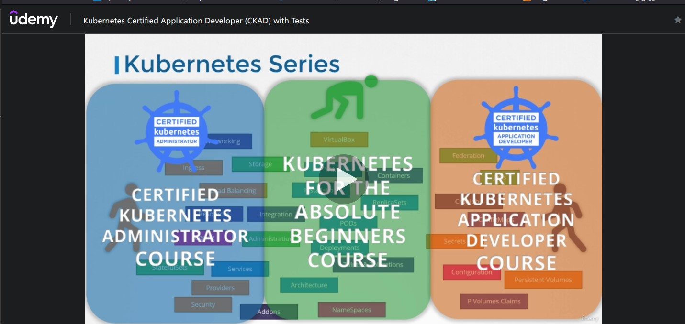
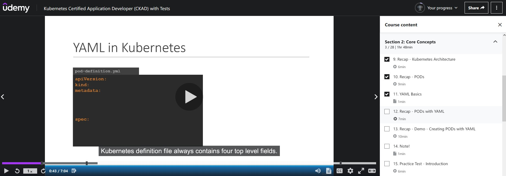
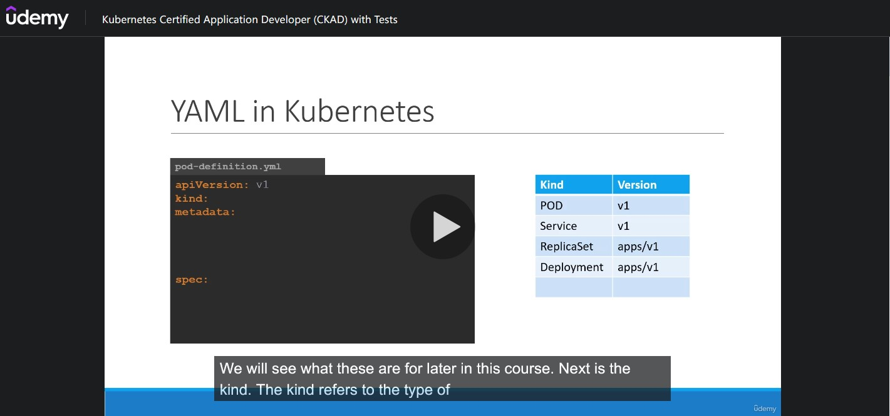
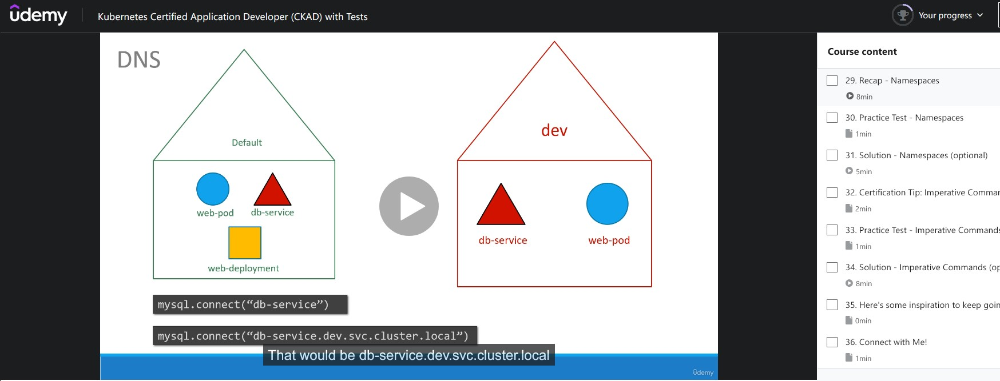
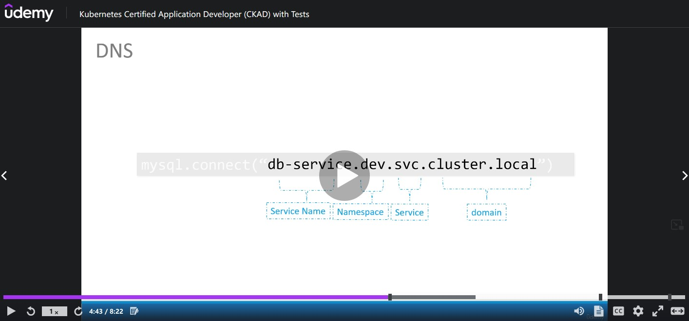
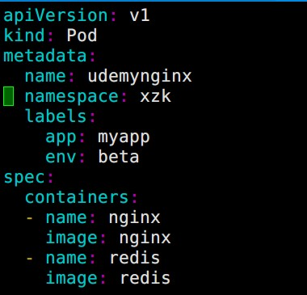
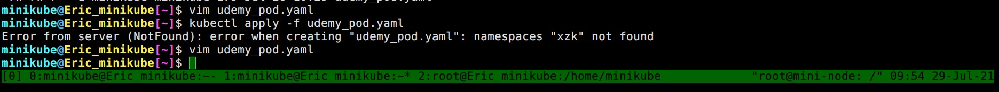
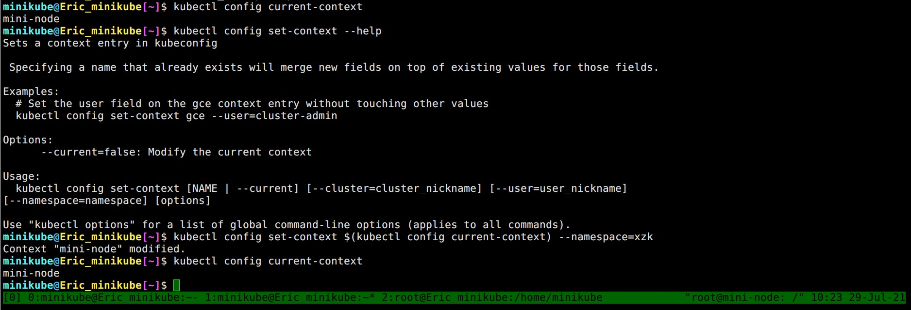

CKAD Note Section 1 Introduction
Contents
Kubernetes Series
作者的系列課程總共有三個，分別適合不同職位的三種人。
- Absolute Beginners (零經驗初學者，帶你從 container 開始)
- sysAdmin (想要通過 CKAD)
- Application Developer (程式開發人員)

Certification Details
這邊告知 CKAD 考試的方式 (非選擇題、線上考試、會有監考官、考試時間 2 小時，可以向監考官申請暫停去上廁所之類的)
CNCF-Certified Kubernetes Application Developer (CKAD)
Linux Foundation-Frequently Asked Questions: CKA and CKAD & CKS
|
|
CNCF Taiwan User Group 發文
Certified Kubernetes Application Developer (CKAD) 要改版了嗎? 官方公告新的 CKAD-2021 將在今年 Q3 實施 (最少會提早 30 天在網站上公告)
目前考試項目與註冊頁面: https://training.linuxfoundation.org/certification/certified-kubernetes-application-developer-ckad/
公告實施頁面: https://training.linuxfoundation.org/ckad-program-change-2021/
7 月 SYSADMIN Day 折扣 (-100 USD): https://training.linuxfoundation.org/july-2021-promo/
Section 2 Core Concepts
K8s yaml 檔永遠有四個 top 欄位 (top level of field): apiVersion, kind, metadata, spec

不同的 kind 使用的 apiVersion 也不同

spec.containers 之所以是 list/array 型態是因為一個 pod 可以包含多個 container
20.Edit Pods
如果遇到題目要求修改現有 Pod 的話
|
|
Tips 快速刪除
如果不使用內建的 --now 或者 --force --grace-period=0 刪除 K8s resource 的話，等待時間將會拖很久。 有些物件 (例如: pod) Kubernetes 預設會等一會兒才會刪除 (grace period) ，在考照的時候你不會想等的!
|
|
或者直接使用 kubectl edit 修改
|
|
(Recap) 21. ReplicaSets
要縮放 pods 可以使用指令
|
|
(自己另外補充的) kubectl create 與 kubectl apply 差異
kubectl create = Creates a new k8s resource in the cluster
kubectl replace = Updates a resource in the live cluster
kubectl apply = If I want to do create + replace
kubectl apply vs kubectl create?
(Recap) 29.Namespaces
每個 namespace 擁有各自的成員與資源 (resources)，Kubernetes 會自動建立一系列的 pods 與 service 作為內部服務，例如 Networking 或者 DNS service
不同 namespace 可以互相存取


在 YAML 裡面也可以直接定義這個 Kubernetes 元件必須被建立在哪個 namespace 裡面，這樣就不用怕忘記下指令時忘記 --namespace=
如果 YAML 裡面指定的 namespace 不存在，則會出現錯誤


▲ 當 namespace 不存在時出現錯誤
要建立 namespace 可以透過 YAML 或者 簡單一點透過 kubectl create namespace xzk 達成
|
|
假如我們必須要在 xzk 這個 namespace 下面工作許久，不想要每次都 --namespace=xzk 的話可以透過
|
|

利用 --dry-run 快速產生 YAML File (32. Certification Tip: Imperative Commands)
--dry-run 預設是帶 --dry-run=none，使用者也可以自訂要使用 --dry-run=client 或者 --dry-run=server。
如果目的是快速產生 YAML file 來說最簡單的方式是不帶 (--dry-run)
產生 pod
|
|
|
|
產生 Deployment
|
|
|
|
Author
LastMod 2022-05-06 (be577e0)